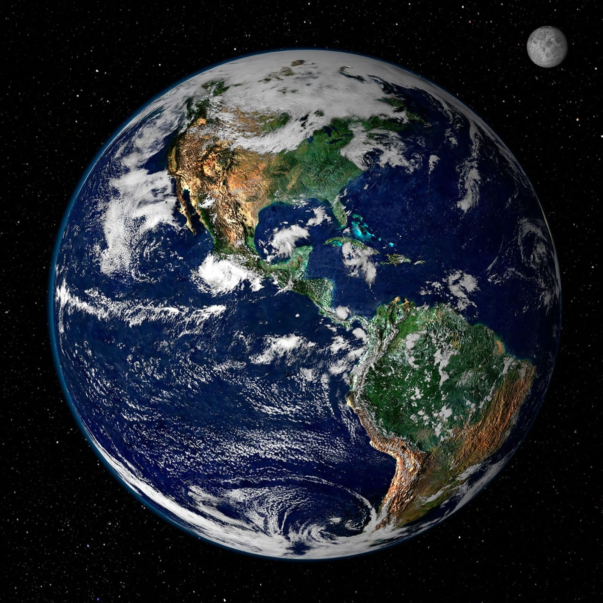

Field Notes From The Solar System
APOAPSIS
The point in any orbit farthest from home — a fitting name for a course built to take you there. Eight worlds, their real numbers, and the physics that hold them in place.

Venus


Mars
↓